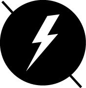
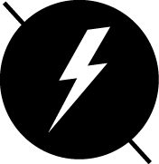

/ L'info en
temps réel

Personnes par jour consultent les sites
d'information généraliste en ligne
10%
Des lecteurs
de livres
téléchargent des
livres numériques
40 %
Des lecteurs de presse écrite se sont convertis au numérique.
Ces chiffres évoluent lentement, mais tous les lecteurs de presse convertissent progressivement aux nouveaux supports, bien plus vite que les lecteurs de livres qui ne sont que 10% à télécharger des e-books. (Philippe person, directeur entertainement chez Gfk)

Journaux & Magazine
BAISSE DES VENTES
Trop chers/copies versions papier
Lecture du journal imprimé
Approfondie, attentive, lente,
concentrée, instructive, réfléchie
calme...
Lecture du journal en ligne
Individuelle, ciblée, sélective
rapide, en diagonale...
La consultation de l'information en
ligne se multiplie en période d'actualité
chaude. Elle permet une transmission
d'informations en temps réel, gratuite
et facilement accessible.
79%
des lecteurs numériques
privilégient les sites des
quotidiens nationaux
SUR LE WEB SE DEVELOPPE PETIT A PETIT
UN NOUVEAU MEDIA :
"LES PURE PLAYERS DE L'INFORMATION
MULTI
MEDIA
/ Divices et b
interactions
"Emmener l'industrie du livre et de la presse vers sa maturité numérique"
révolution bde leur industrie
- éditeurs
- auteurs
- libraires
- diffuseurs
- groupe de presse
4
éxigences
- - étendre leurs champs d'action sur les nouveaux supports
- - développement d'une culture de l'instantanné, d'échange
et de gratuité ! - - moderniser leurs outils et renouveler leurs formats !
- - répandre leur distribution pour l'adapter au nouvel
environnement !
43%
passe plus de temps sur ce nouvel écran que sur leurs ordinateurs.
Journaux et magazines
baisse des ventes
trop chers / copies version papier
70 000 000 millionsdans le monde
soit 4x plus qu'en 2010 !
the project
magazine numérique / au contenu exclusif
mise à jour pendant le mois / à 2,99$ par mois
the daily
un quotidien / à moins de 4$ par mois
soit 0,99$ par semaine / journalisme de qualité
pour
"l'internaute"
- + personnalisation
- + mise en valeur du contenu
- + grande liberté de ton
- + interagir & débattre
- + pluri-média
Le blog
Un outil interactif le plus complet !
- 50% site de presse nationale
- 60% site de presse régionale
- 52% site de presse magazine
/Flash
Information
Les réseaux sociaux mettent les internautes un peu plus au coeur de l'information. Ils deviennent acteur, puisque c'est eux qui construisent les informations.
d'utilisateurs avant le 1er juin 2011
d'utilisateurs en France
Semiocast vient de publier une étude portant sur la totalité des 263 millions de profils d’utilisateurs de Twitter créés avant le 1er juin 2011. dans l’hexagone, il subsiste à l’heure actuelle 3.3 millions d’utilisateurs de Twitter, dont la moitié étant active.


- Sans modification
enregistrée - Changement d'abonnements
et d'envoi de messages - Changement d'abonnements
uniquement - Compte jamais utilisé
- Envoi de message
uniquement - Autre modification
du profil

Un pote aux Etats-Unis vient de me rapporter que #DSK aurait été arrêté par la police dans un hotel à NYC il y a une heure ...

- millions de comptes actifs
- millions de publications
quotidiennes - millions de photos sont
publiées par jour - millions d'utilisateurs actifs accèdent
à Facebook via leur mobile
/ Filtre des
informations
70%
Des nouveaux contenus du
web sont générés par
des particuliers

«Il existe une panoplie infinie de documents variés sur Internet dont l'exactitude, la fiabilité et la valeur varient. Contrairement à la plupart des médias d'information conventionnels, de l'information est rendue publique sans que personne n'ait à en approuver le contenu.»
HOAXBUSTER
L'information la plus porteuse de valeur ajoutée est
aujourd'hui celle qui nous fait gagner du temps.

Paper.li vous permet de créer un journal personnalisé en fonction de vos centres d'intérêts et de le partager via les réseaux sociaux.

L'interactivité permet aux utilisateurs de traiter le contenu de manière différenciée selon leurs centres d'intérêts.

 Pulse redéfinit l'actualité en vous donnant l'opportunité d'expérimenter les informations que vous désirez provenant de vos sources habituelles, de vos blogs préférés et des réseaux sociaux - Le tout dans une belle interface.
Pulse redéfinit l'actualité en vous donnant l'opportunité d'expérimenter les informations que vous désirez provenant de vos sources habituelles, de vos blogs préférés et des réseaux sociaux - Le tout dans une belle interface.
 Flipboard est une belle et rapide façon de visionner vos médias sociaux avec une mise en page de magazine plaisante à lire
Flipboard est une belle et rapide façon de visionner vos médias sociaux avec une mise en page de magazine plaisante à lire
 News.me met en forme les tweets des personnes qui vous intéressent. Il vous propose de lire les articles partagés directement sur votre iPad.
News.me met en forme les tweets des personnes qui vous intéressent. Il vous propose de lire les articles partagés directement sur votre iPad.

 

« La disparition d’une base commune d’informations nous rend étroits d’esprit, moins aventureux intellectuellement et plus vulnérables à la propa- gande et à la manipulation. » Pariser
Launch Modal
Ex his quidam aeternitati se commendari posse per statuas aestimantes eas ardenter adfectant quasi plus praemii de figmentis aereis sensu carentibus adepturi, quam ex conscientia honeste recteque factorum, easque auro curant inbracteari, quod Acilio Glabrioni delatum est primo, cum consiliis armisque regem superasset Antiochum. quam autem sit pulchrum exigua haec spernentem et minima ad ascensus verae gloriae tendere longos et arduos, ut memorat vates Ascraeus, Censorius Cato monstravit. qui interrogatus quam ob rem inter multos... statuam non haberet malo inquit ambigere bonos quam ob rem id non meruerim, quam quod est gravius cur inpetraverim mussitare. Ex his quidam aeternitati se commendari posse per statuas aestimantes eas ardenter adfectant quasi plus praemii de figmentis aereis sensu carentibus adepturi, quam ex conscientia honeste recteque factorum, easque auro curant inbracteari, quod Acilio Glabrioni delatum est primo, cum consiliis armisque regem superasset Antiochum. quam autem sit pulchrum exigua haec spernentem et minima ad ascensus verae gloriae tendere longos et arduos, ut memorat vates Ascraeus, Censorius Cato monstravit. qui interrogatus quam ob rem inter multos... statuam non haberet malo inquit ambigere bonos quam ob rem id non meruerim, quam quod est gravius cur inpetraverim mussitare.